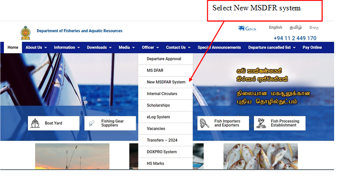
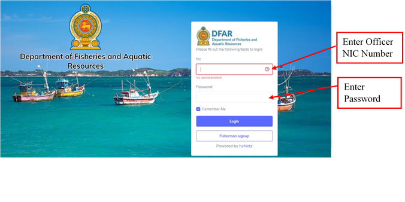
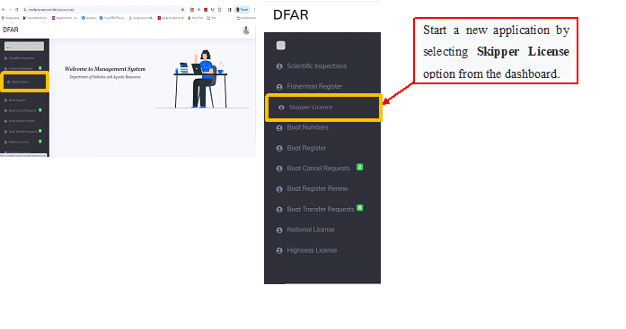
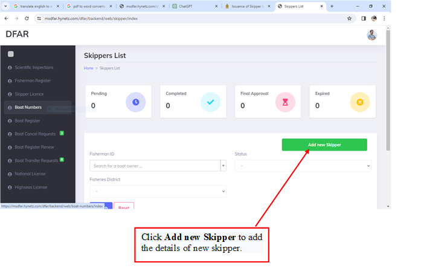
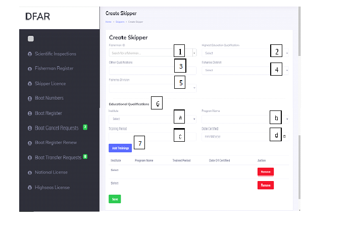
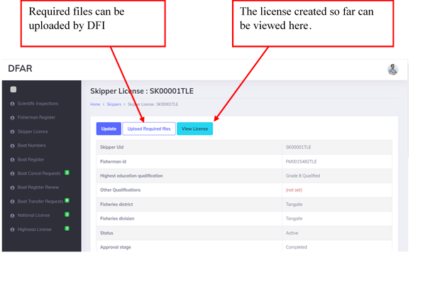
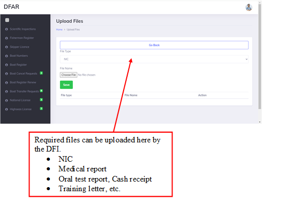
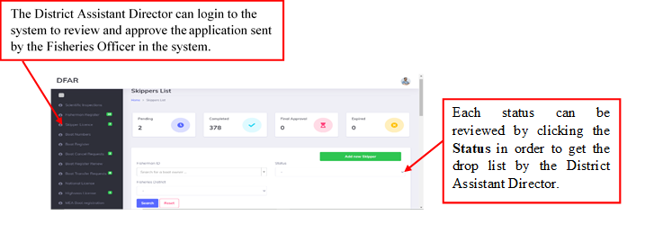
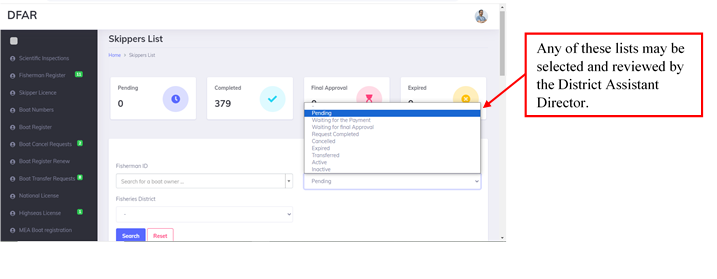
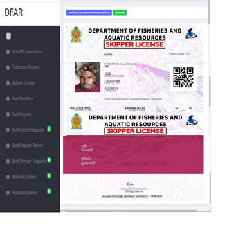

This manual serves as a comprehensive guide for users involved in the process of obtaining skipper licenses using the MSDFAR system.
The skipper licensing system is designed to streamline the leader licensing process. It facilitates submission of applications, document verification, approval process and issuance of permits. This manual provides step-by-step instructions for users to navigate the system effectively.
Note: Before registering as a skipper, must be registered as a fisherman with this Department.
•Before access to the system, scan & save the following documents.
• Access to the MSDFAR system
The system can be accessed through Officer → New MSDFAR System by visiting the Department of Fisheries and Aquatic Resources website.


Afterward, entry to the Skipper license module in the manual bar of the screen that appears can be made.

• This screen can be seen once the skipper license in the manual bar is clicked on.


2. Highest education qualification
3. Other qualifications
4. Fisheries district
5. Fisheries division
6. Education qualifications
7. Trainings - By clicking on Add Training, the details of the training programs attended by the pilot can be
entered
• District Fisheries Inspector will verify the applicant's information against the fisherman registration system.

• This screen can be seen once the skipper license in the manual bar is clicked on.



• The officer in the Development division will print the skipper ID license send it to relevant district office.
